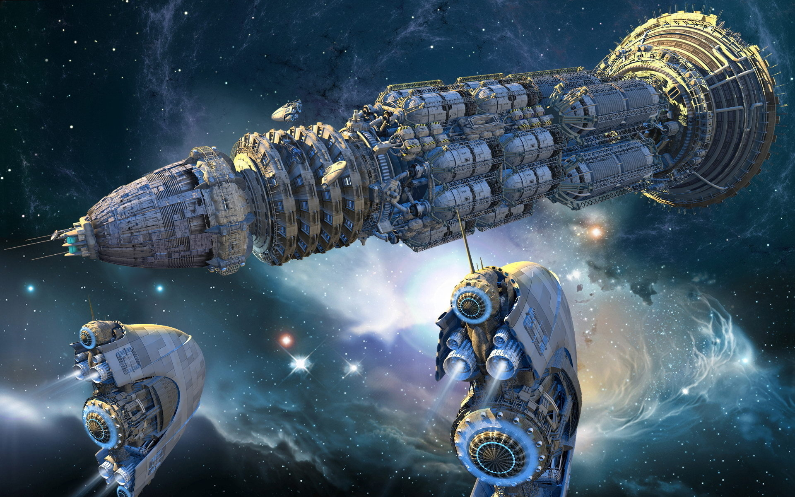

Часть первая
- Борт "H-R 001" , Вас приветствует Сторожевая станция "МАЯК" Лиары . Займите точку ожидания на
векторе 0-0-0 и перейдите в дрейф. Передайте код идентификации.
Приём .
- Принято Лиара , Передаём код допуска. . Выходим на точку ожидания и ложимся в дрейф.
Приём.
- Код подтверждён. Добро пожаловать в систему Лиары. Оставайтесь на позиции и ожидайте
дальнейших
инструкций. Конец связи.
Флагман Легарда «МОЛОТ» вышел из подпространства у орбиты Лиары точно в оговорённый момент.
Сначала в пустоте космоса появилась рваная тёмная складка пространства. Она дрогнула, словно
ткань, и в следующую
секунду из неё медленно выдвинулся нос гигантского корабля.
Потом — броневой гребень.
Потом — вся чудовищная масса флагмана.
Будто сама тьма выдавила его в реальность.
Гигантский корпус корабля медленно остывал после прыжка, отдавая в пустоту остаточное
тепло.
Лишь слабые вспышки маневровых двигателей иногда пробегали по его корпусу корректируя
положение, системы стабилизации возвращались к
штатному режиму.
Бортовые огни перешли в парковочный режим, и огромный крейсер неподвижно повис над
планетой.
После короткого согласования доступа и выделения коридора личный штурмовик Легарда понёс его от
крейсера к посадочной
площадке личной резиденции Владека, где хозяин уже ждал прибытия гостя.
Встреча была дружеской, но с едва заметным напряжением в поведении Владека. Покинув штурмовик,
Легард подошёл и, пожав
руку, улыбнулся:
— Рад видеть тебя, Владек. Стандартные вопросы — как дела? Как семья? Как успехи? — стараясь
сходу придать лёгкую
атмосферу, видя уставший вид друга.
— Всё в порядке, — ответил Владек с лёгкой усталостью на лице. — Работа кипит, семья в заботах,
успехи грандиозные. Сам
как? Такие же ответы, — постарался ответить в таком же непринуждённом тоне и попытался хоть
слегка улыбнуться. Вышло не
очень.
— Тоже всё спокойно, — кивнул Легард, оглядывая пространство посадочной площадки. — Слушай, ты
подготовил нам какую-то
грандиозную презентацию своего нового детища? У тебя, кстати, вид слегка напряжённый.
Владек вздохнул. Они неспеша направились в сторону небольшого дворика сбоку дома:
— Прототип готов, подготовка к презентации почти завершена… Она будет завтра утром. Но есть
мелкие сомнения. Результат
может немного отличаться от того, что мы ожидаем вместе с учёными. Конструкция сложная и много
новых неопробованных
решений. Но специалисты утверждают, что всех проведённых тестов более чем достаточно. Уверили
меня всем отделом — смело
строить полноценный «объект», а не просто тестовый прототип. Я им, кстати, полностью
безоговорочно доверяю.
Легард похлопал его по плечу, стараясь приободрить:
— Если «объект» уже готов, значит, учёные всё просчитали до мелочей. Лично я своим учёным
доверяю на уровне, как себе.
Эти люди никогда не бегут за славой впереди паровоза. Железный результат им нужен больше, чем
нам двоим вместе взятым.
Всё будет в порядке. Не переживай так сильно, на тебе ж лица нет.
Владек слегка улыбнулся, почувствовав, как напряжение немного спадает.
— Мы как-то сразу о делах да о проблемах. Завтра будет день — будет пища, как говорят. Тем более
уже всё готово и
дёргаться уже поздно, — усаживаясь в мягкое кресло, Легард приободрял «коллегу». — Кстати, где
Сержен, когда его ждать?
Ты приготовил ему порцию очередных спиртных изысков? — Легард повертел воображаемым стаканом в
воздухе.
— Он прибудет примерно через час, заканчивает свои дела. Ну, пропустить посиделки он конечно же
не допустит, — уже
слегка расслабился Владек. — Давай пока его ещё нет, коротко пробежим по основным деталям.
Они расположились за небольшим столиком под открытым небом. Вечерний ветерок шевелил листву, а
вдалеке уже зажигались
огни города. Напряжение всё ещё витало, но дружеская обстановка постепенно брала верх.
— Да, ты меня введи в курс основных деталей, коротко по делу. Кстати, наш договор остаётся в
силе? На «полигон» мы все
отправимся на моём крейсере. Как мы все знаем, ещё раз хочу так сказать похвастаться — он самый
защищённый от
всевозможных, как физических угроз, так и всех известных внешних излучений. Всем участникам
будет максимально безопасно
наблюдать за испытанием.
— Да-да, без вопросов, — поспешно перебил Владек. — Этот момент мы закрепили, твоё предложение
наиболее реалистично.
Вопрос решён.
— Хорошо. Тогда к делу, коротко и по сути.
— Коротко. Для первой активации учёные составили план действий. Станции слежения системы «ГЛАЗ»
и дополнительные дальние
скауты-разведчики выбрали из поля астероидов две потенциальные цели. Два самых крупных астероида
размером с небольшую
Луну. Их так и назвали — «Луна-1» и «Луна-2». Они сейчас движутся довольно далеко и главное —
находятся на ближней
стороне поля к нам. Мы их будем видеть физически. Судя по скорости потока в поле, они будут в
зоне нашего эксперимента
как раз завтра в нужное нам расчётное время. Всё проверено много раз и синхронизировано. Хорошо,
что поле астероидов очень далеко от наших
систем, мало ли что…
— Ну это да…
— Так вот. Мы все на крейсере выдвигаемся в сектор эксперимента. «ИГЛА» уже там со вчерашнего
дня, проходит бесконечные
отладки и финальные проверки, учёные тоже на нервах. В назначеное время "Луна-1" будет в зоне
нашей досягаемости и мы
проведём испытание. "Луна-2" будет запасной вариант . Она примерно в 40 минутах от первой и
фактически на том же курсе.
Так что , если что...
- Никаких "если что" ... Всё пройдёт как по-маслу. Спокойно , спокойно , - мягко и слегка
улыбаясь Легард через столик
слегка похлопал по руке Владека, видя как тот снова начинает внутри нервничать .
- Да , - коротко отрезал тот , - по-другому никак.
- Ну и всё ...
Тихо шаркнув по земле, появился дроид-секретарь.
— Мистер Владек, мне сообщают, что крейсер мистера Сержена вышел на орбиту
Лиары.
— Ну наконец, — оживился Владек. — Когда проведут все формальности, свяжите нас с Серженом.
Дроид кивнул и отправился за портативным голопередатчиком.
— Ценитель напитков прибыл, — улыбнулся Легард. — Готовь вермут, давай-давай, — он встал и
потянул Владека за руку. —
Сегодня о делах больше ни слова, тебе это пойдёт на пользу.
— Ладно, — взбодрился Владек. — Идём на площадку встречать «гурмана».
Неспеша болтая, они направились к посадочной площадке, где их догнал дроид и вручил портативный
голопроектор. Там уже
мигала зелёная лампочка входящего вызова.
— Друзья, вот и я !!! — широко улыбаясь, приветствовал всех Сержен. — Вы там на стол накрыли ?
Мы
должны отметить начало
грандиозных перемен, — он был в прекрасном настроении, которое начало передаваться и
остальным.
— Отмечают не «до», а «после», — уже повеселев, заметил Владек. — Тебя одного ждём !!!
— Ну была бы хорошая компания, а что отметить — всегда найдётся !!!
Все негромко усмехнулись.
— Давай уже… Мы на посадочной платформе, уже устали стоять…
— Десять минут, и вместе уже присядем. Никуда не уходите.
Голограмма исчезла, и двое стали ждать появления третьего.
Сержен привёз с собой небольшие сувениры а главное - отличное настроение .
Вечер прошёл в дружеской атмосфере и разговорах более-менее отличных от дел.
Завтра будет новый день. Он принесёт новые грандиозные события , новые достижения , новые
перспективы .
И в успехе уже никто не сомневался.
Часть вторая
Дальняя область системы Лиара, сектор D-17, точка 48-А-12.8. Позиция дрейфа - 266 000
километров от внешнего края астероидной стены .
Флагманский крейсер Легарда вместе со всеми наблюдателями находился на безопасном расстоянии от
«ИГЛЫ». Но даже с этой
дистанции объект выглядел внушительно и угрожающе.
Его общая длина была почти равна длине крупного крейсера. Примерно три четверти всей конструкции
занимала массивная
толстостенная «труба», покрытая снаружи сотнями небольших пятигранных пирамидок — словно
панцирем доисторического
существа.
К задней части труба переходила в длинную воронкообразную секцию, заканчивавшуюся кольцом
коротких шпилек, торчащих по
всему её ободу. Сверху на воронке возвышался странный выступ, напоминавший зловещий нарост.
Профессор Пол Сэменс пояснил, что внутри этого "нароста" находится полость концентратора
плазменных мако-частиц. Все
приняли объяснение как должное, без лишних вопросов.
С обеих сторон к воронке были присоединены два массивных овальных контейнера. Это были съёмные
топливные батареи,
заполненные кристаллами Тибария.
— Да тут, наверное, пятая часть всех твоих запасов, — с лёгкой иронией заметил Легард, обращаясь
к Владеку.
— Если быть точным — седьмая часть… Я хочу верить, что этот ресурс сейчас тратится не зря.
В голосе Владыка чувствовалось серьёзное напряжение. Сейчас его явно не стоило задевать.
— Ууу… — тихо присвистнул Сержен, услышав, какое количество кристаллов поставлено на кон.
В его голове явно уже щёлкал невидимый калькулятор, просчитывая возможные последствия. Седьмая
часть драгоценного
ресурса на один проект.
При таком раскладе осечек быть не должно.
Объект «ИГЛА» не имел ни собственных двигателей, ни командной башни. Лишь несколько небольших
ионных корректирующих
двигателей в носовой и кормовой частях обеспечивали стабилизацию в четырёхмерном пространстве и
точное наведение.
Поэтому объект доставили два небольших, но мощных буксира, которые оставались пристыкованными по
обе стороны конструкции
до начала тестирования.
Управление всем комплексом осуществлялось через закрытый канал радиосвязи.
Приёмно-исполнительная рубка располагалась в
центральной части «трубы».
На командный мостик флагманского крейсера Легарда была доставлена и установлена массивная панель
управления объектом. От
неё через технические коридоры был проложен широкий спецшлейф кабелей, который выходил наружу и
соединялся с огромной
антенной-тарелкой.
Эта антенна была разработана специально для испытаний учёными Лиары и установлена прямо над
командирской рубкой
крейсера.
Возле панели управления суетились два помощника профессора Пола Сэменса. Сам профессор то
появлялся рядом с ними, то
вновь исчезал, сверяясь со своим планшетом и отдавая короткие распоряжения.
Испытание должно было начаться с минуты на минуту.
Последние проверки подходили к концу.
В пространстве вокруг постепенно воцарялась напряжённая тишина — та самая, которая всегда
предшествует событиям,
способным изменить многое.
*
— Объект «Луна» будет в зоне видимости через 18 минут 11 секунд, — прозвучал мягкий голос
навигационного оператора из
селектора на командном мостике.
Восемнадцать минут до начала.
По расчётам профессора Пола Сэменса, окно для проведения теста составит всего шесть минут. Шесть
минут на наведение,
корректировку и спуск.
На мостике воцарилась напряжённая тишина. Каждый занимался своим делом и старался не мешать
другим. Пол Сэменс уже не
бегал между панелями — он стоял у пульта управления, в последний раз проверяя настройки и
корректировки.
Всевидящие сенсоры станций системы наблюдения «ГЛАЗ» неумолимо вели выбранный объект — «Луну»,
медленно дрейфующую в
стене астероидов, к её судьбоносному моменту.
Сама «Луна» ещё не знала, что ждёт её в ближайшие минуты.
На экранах наблюдения она лениво перекатывалась с бока на бок, отталкивая мелкие обломки и
астероиды со своего пути.
Ещё восемнадцать минут — и, возможно, закончится её бесконечное вальяжное путешествие от края до
края галактики.
Ещё восемнадцать минут — и, возможно, будет сделано новое открытие. Новый шаг в торжестве
технологий.
Подготовка завершилась. Все напряжённо ждали того самого окна.
— Две минуты, — доложил оператор.
Буксирам была передана команда на отстыковку.
Тяжёлые фиксаторы разошлись, и буксиры медленно отошли в стороны.
Ионные корректирующие двигатели «ИГЛЫ» мягко изменили положение конструкции.
Сектор появления цели был захвачен в прицел.
Ожидание стало мучительным. Казалось, время растянулось. Цифры на таймере в командирской рубке
сменялись настолько
медленно, что секунды ощущались как минуты.
И вот наступил тот самый момент.
— Объект «Луна» в поле зрения, — прозвучал долгожданный голос из селектора.
— Начали, — громко скомандовал профессор Сэменс.
— Всем надеть защитные очки, — раздалось по внутренней связи.
Присутствующие на мостике поспешно надели защитные очки. Они должны были защитить глаза от
возможной вспышки.
Хотя расстояние до объекта было огромным, никто точно не знал, как поведёт себя ни «оружие», ни
сама «Луна».
Взгляды всех присутствующих, кроме профессора и его помощников, были прикованы к «ИГЛЕ».
— Продувка системы...
— Коррекция вектора...
— Блок один — на полную мощность...
— Захват координат...
— Проверка стабилизаторов...
Профессор Сэменс отдавал короткие, чёткие команды.
Тело «ИГЛЫ» словно ожило.
Сначала в кормовой воронке появилось слабое свечение. На концах шпилек в хаотичном порядке
начали вспыхивать маленькие
огоньки.
Ионные двигатели ещё раз скорректировали положение конструкции.
— Захват цели, — чётко произнёс профессор.
На панели управления раздался короткий двойной сигнал.
Из носовой части трубы «ИГЛЫ» вырвался тонкий желтовато-красный луч лазера и устремился в стену
астероидов.
— Корректировка...
— Есть захват цели...
— Стабилизация...
— Ведём цель...
— Система стабильна, — доложил помощник профессора, выполняя серию быстрых манипуляций на
пульте. — Готовность два.
Прошла минута.
— Активировать ядро. Магниты — готовность один, — отчеканил профессор Сэменс и нажал большую
зелёную кнопку в центре
пульта.
В воронке «ИГЛЫ» зародилось бледное свечение, которое за считанные секунды превратилось в
ярчайший белый сгусток
энергии.
На него все смотрели через защитные очки.
Он стремительно рос, заполняя всё пространство воронки.
Казалось, энергия пульсирует и пытается вырваться наружу.
Со шпилек по периметру воронки вырывались длинные бело-синие молнии, словно цепляясь за пустоту
космоса.
Казалось, внутри всей конструкции бушует невидимая гроза.
— Готовность ноль... Пятнадцать секунд, — спокойно произнёс профессор.
Помощники практически синхронно щёлкнули переключателями по обе стороны пульта.
Все на мостике замерли.
Профессор Сэменс крепко сжал в руке рычаг запуска.
На таймере пошёл обратный отсчёт.
6…
5…
4…
3…
2…
1…
— Пуск!
*
Профессор Сэменс уверенным движением перевёл рычаг запуска в верхнее положение.
В тот же миг свечение в огромной воронке «ИГЛЫ» резко исчезло — словно кто-то мгновенно погасил
звезду.
Накопленный внутри сгусток энергии сорвался с места.
Он вырвался из трубы почти беззвучно, узкой струёй, и со скоростью, едва различимой
человеческому глазу, устремился в
сторону стены астероидов вдоль линии прицельного лазера. Доля секунды и в пространстве остался
тонкий след — и тот сразу
растворился в черноте космоса.
Все на мостике невольно задержали дыхание.
Каждый ожидал одного и того же — вспышки.
Огромной. Ослепительной. Такой, какую невозможно пропустить даже на таком расстоянии.
Но вспышки не произошло.
Ничего.
Чёрная стена астероидов оставалась такой же спокойной и безмолвной, как и мгновение назад.
Кто-то громко вдохнул.
— Что?.. — у каждого возник один и тот же вопрос. — Провал?
Все продолжали смотреть на стену астероидов.
В выделенном секторе наблюдения медленно дрейфовали те же самые тёмные глыбы. Ни вспышки. Ни
ударной волны. Ни малейшего
намёка на произошедшее.
Секунда.
Две.
Три.
Ничего.
На командном мостике стояла тишина, такая густая, что было слышно лёгкое потрескивание приборов
и едва заметное гудение
систем станции.
— Неужели… провал… — тихо произнёс кто-то позади.
Профессор Сэменс нервно молчал. Он не отрывал взгляда от сектора.
Резкое, отрывистое писчание прорезало тишину.
Сразу со всех наблюдательных мониторов.
Звук был настолько неожиданным, что все разом вздрогнули.
— Сигнал с дальних сенсоров! — крикнул оператор.
Все на мостике одновременно рванулись к экранам.
На выделенном секторе стены астероидов сначала появились едва заметные искры.
Крошечные.
Почти точечные.
Они вспыхивали одна за другой — сначала десятки, потом сотни… затем тысячи.
Мгновение — и стало ясно: это не свет.
Это движение.
Тысячи мельчайших отражений начали быстро разрастаться, словно внутри тёмной стены кто-то
внезапно зажёг огромное
звёздное облако.
Огоньки стремительно множились.
Расходились во все стороны.
Расширялись.
Секунду спустя они уже образовали огромный, быстро растущий шар.
— Осколки… — вскрикнул кто-то.
Это действительно были осколки.
Тысячи.
Десятки тысяч.
Мелкие каменные фрагменты, толкая друг друга, разлетались во все стороны, отражая лучи сенсоров
и превращаясь на экранах
в сверкающий рой.
Там, где ещё мгновение назад лениво перекатывался малая "луна", ничего не осталось.
Ни одной цельной стабильной массы .
Ни одной тени.
Лишь плотное облако обломков, быстро расползающееся в космической пустоте.
Того, что когда-то называли «Луной», больше не существовало.
Она исчезла.
Полностью.
Её больше нет .
На командном мостике воцарилось гробовое молчание.
Люди смотрели на экраны, не веря собственным глазам.
Никакой вспышки.
Никакого грандиозного взрыва.
Ничего из того, что они ожидали увидеть.
И всё же результат был очевиден.
Профессор Сэменс медленно выпрямился.
Его взгляд скользнул по мониторам, где всё шире разрасталось облако обломков.
Он тихо произнёс всего одно слово:
— Успех.
Никто не ожидал, что всё произойдёт именно так.
Без ослепительного света.
Без космического фейерверка.
Просто — в одно мгновение перестало существовать целое небесное тело.
И именно это пугало больше всего.
Холодок пробежал по спинам многих присутствующих .

Всеобщий ступор сменился взрывом эмоций — как будто невидимая плотина лопнула, и накопленное
напряжение хлынуло наружу в
виде восторга, криков, смеха и невольных возгласов.
У каждого эмоции были разные.
Доктор Эммид Баун пронёсся через всю капитанскую рубку к пульту управления, двумя руками схватил
руку профессора Пола
Сэменса и так яростно начал её трясти, что его седые усы дрожали, как две живые серебристые
гусеницы в приступе
ликования, а очки у обоих вот-вот норовили соскочить с переносицы.
— Поздравляю, коллега, это однозначный успех! Я потрясён! — Казалось, он сейчас оторвёт правую
руку профессору.
Сдержанное ликование охватило и остальных учёных с их немногочисленными помощниками: кто-то
почти по-детски хлопал в
ладоши, у кого-то вырывались короткие возгласы восхищения «Невероятно!», «Это прорыв!», кто-то
просто стоял с широко
раскрытыми глазами, не в силах оторваться от мониторов, где всё ещё мерцали следы энергии.
Переживания Владека сменились на сдержанное ликование. Он смотрел на россыпи искр в мониторе,
как на первое настоящее
доказательство, что всё это не зря.
— Вот это да, — похлопал его по плечу Сержен. — Я ожидал фейерверк галактического масштаба, но…
результат и без него
превосходный. Ресурс кристаллов не потрачен зря, - довольно причмокнув , как будто это был его
ресурс .
— Да уж, — наконец отвлёкся от монитора Владек, приходя в себя. — Не зря. Так точно.
Легард глубоко выдохнул, также пару раз похлопал Владека по плечу:
— Ну вот, а ты переживал. Я же говорил — всё будет как положено. Не так эффектно - зато очень
эффективно.
— Вот теперь точно есть что отметить, - ещё больше оживился сержен. , - с тебя банкет,- шутливо
подтолкнул Владыка в
бок.
- Ладно с этим позже, - заметил Легард, - Давай задание учёным, Пускай делают все замеры И что
там им ещё надо.
- Они и без нас в курсе, им работать теперь надолго хватит.
- Та да, что это лезу Не в свои дела.., - осёкся Легард , - Хорошо Давайте займёмся каждой своим
делом.
Атмосфера на командном мостике быстро перешла из «празднующей» снова в деловую. Учёные
разделились на небольшие группы,
что-то сверяли, отмечали, наблюдали, спокойно, без суеты, сверяли все показания, коротко
обсуждали, делились своим
мнением.
Сержен ушёл в рубку связи сообщить жене об удачном завершении испытания.
Владек отошёл в сторону со своим помощником и обсуждали транспортировку «ИГЛЫ» на базу для
техобслуживания и проверки
всех систем.
Легард, подойдя к небольшой группе учёных, полушёпотом обратился к доктору Эммиду, который с
профессором Сэменсом что-то
увлечённо обсуждали, тыкая карандашом в монитор наблюдения.
— Доктор Эммид, если у вас найдётся минутка для меня, отойдёмте на пару слов.
— Да, — повернулся доктор с таким видом, как будто бы не ожидал увидеть Командора на его
собственном крейсере. —
Профессор, через 5 минут я буду готов продолжить с вами обсуждение этой реакции, — кинув горящий
взгляд через очки на
профессора Сэменса, он проследовал за Легардом из командирского мостика в отдалённое
помещение.
Дверь с тихим шипением закрылась, и двое остались наедине в небольшой кают-компании.
Как вам представление, Командор? — помахал указательным пальцем в воздухе оживлённо обратился
доктор к Легарду. —
Впечатляет, не правда ли?
— Более чем, я бы сказал так. Доктор… — он уверенно взял его за руку чуть выше локтя, как бы
отводя в укромное место
комнаты от чужих глаз. — У меня к вам очень деликатная и очень глубоко личная просьба.
— Я вас слушаю, — доктор поправил пальцем очки и с полной готовностью в упор смотрел через них
на Командора.
— То, что мы через какое-то время несомненно получим подробную — я надеюсь — документацию по
этому новому оружию — это
понятно. У меня к вам, ещё раз повторюсь, просьба более личного характера. Я бы хотел, чтобы вы
в последующих
разговорах, чтении документов, да и во всей этой деловой суете постарались узнать как можно
больше неофициальной
информации. Я бы это назвал — то, что не попало в официальные документы. Нюансы, разные мелочи,
детали. Я думаю, вы
понимаете, о чём я вам говорю.
Доктор Эммид медленно выпрямившись по стойке «смирно», казалось, даже нахмурил брови, чуть ли не
шёпотом медленно
произнёс:
— Командор, то, что вы сейчас мне предлагаете, называется «промышленный шпионаж».
Легард, не давая развивать доктору мысль, сделал полшага вплотную к нему и уверенным, сдержанным
голосом поправил
доктора:
— Это называется «национальная безопасность». Именно так. Вы до сих пор не понимаете всей
важности момента, доктор. Мы
на пороге технологического скачка, который может изменить всё. И если мы не будем знать всего —
даже то, что другие
пытаются скрыть, — мы рискуем остаться позади. Вы понимаете о чём я говорю, уверен в этом. И
понимаете адекватно и
правильно.
— Я уверен, что мы получим полный доступ ко всем характеристикам объекта согласно «Научному
кодексу» Альянса и…
— Я в этом даже не сомневаюсь, доктор, — прервал его Легард. — Помимо всей официальной
документации меня также
интересуют неофициальные мнения по этому вопросу — учёных, политиков, в общем, всех, кто имеет
отношение к этой
установке. Служба разведки конечно же выполняет свою функцию, но больше информации можно
получить из обычных разговоров
в среде учёных.
— Вы хотите превратить меня в шпиона?
— Я не хочу вас ни в кого превращать. Я высоко ценю вас как учёного, специалиста, и для меня
этого достаточно. Попрошу
вас в общении с вашими коллегами подмечать различные интересные моменты, нюансы, но я вам уже
это сказал. Очень вас
прошу, доктор. Личная просьба.
— Хорошо. Только не думайте, что я согласился шпионить. Если будет что-то выходящее за рамки
официальных документов — я
обязательно вам это сообщу.
— Благодарю вас, доктор Эммид. Спасибо за ваше понимание.
— И вам спасибо, Командор, за понимание, — он машинально пожал руку Легарду и широкими шагами
поспешно вышел из комнаты,
направляясь обратно на командирский мостик к профессору.
«Глупый неисправимый альтруист», — нервно подытожил Легард, глядя ему вслед.